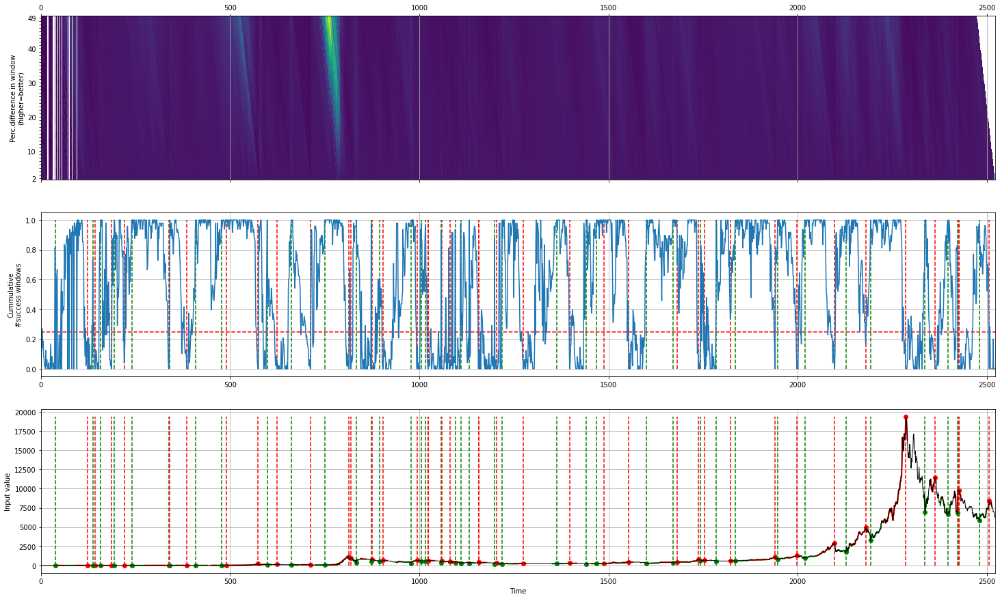
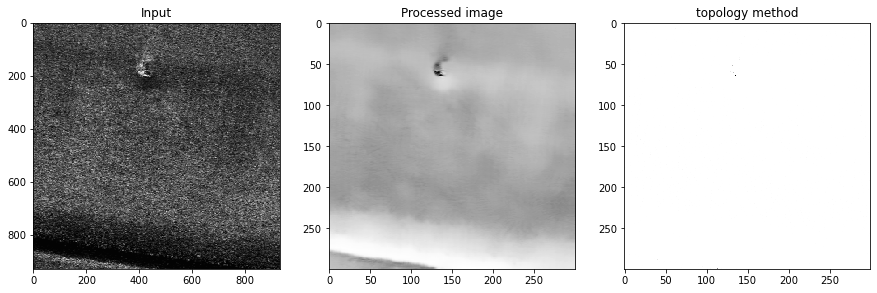
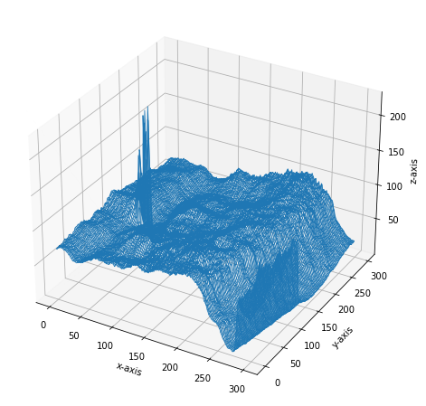
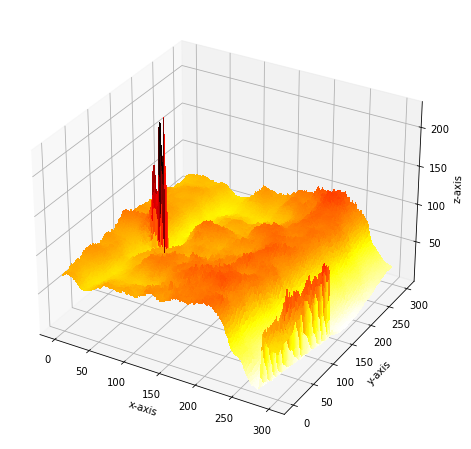
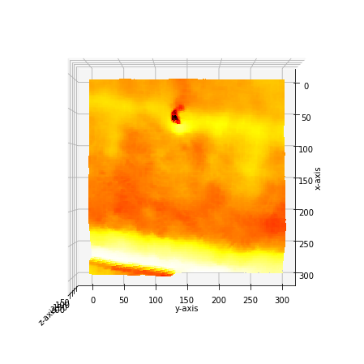

Stock Markets
The detection of peaks and valleys in stockmarket data can be challanging because of its unpredictable behavior. The use of peak detection techniques such as topology require a very specific set of input parameters and seem only to work for certain timeframes, scales, or trends (bull/bear/sideways) in the market.
To overcome these challanges, I developed the method Caerus and incorporated it in findpeaks.
Caerus is a python package (https://github.com/erdogant/caerus) that determines the local-minima with the corresponding local-maxima within the given time-frame.
Bitcoin
# Import library
from findpeaks import findpeaks
# Initialize findpeaks with cearus method.
# The default setting is that it only return peaks-vallyes with at least 5% difference. We can change this using params
fp = findpeaks(method='caerus', params_caerus={'minperc':10})
# Import example data
X = fp.import_example('btc')
# Fit
results = fp.fit(X)
# Make the plot
fp.plot()
 |
Lets print out some of the detected results:
# Results
print(fp.results['df'])
# index labx peak valley y x
# 0 0 False False 5.970 0
# 1 0 False False 5.530 1
# 2 0 False False 5.130 2
# 3 0 False False 4.850 3
# 4 0 False False 4.870 4
# ... ... ... ... ...
# 2517 0 False False 7010.800 2517
# 2518 0 False False 7028.705 2518
# 2519 0 False False 6937.055 2519
# 2520 0 False False 6718.060 2520
# 2521 0 False False 6265.215 2521
# Number of peaks
print(fp.results['df']['peak'].sum())
# 36
# Number of valleys
print(fp.results['df']['valley'].sum())
# 39
Facebook stocks
# Import library
from findpeaks import findpeaks
# Initialize findpeaks with cearus method.
# The default setting is that it only return peaks-vallyes with at least 5% difference. We can change this using params
fp = findpeaks(method='caerus')
# Import example data
X = fp.import_example('facebook')
# Fit
results = fp.fit(X)
# Make the plot
fp.plot()

SAR
SAR images are affected by speckle noise that inherently exists in and which degrades the image quality. It is caused by the back-scatter waves from multiple distributed targets. It is locally strong and it increases the mean Grey level of local area. Reducing the noise enhances the resolution but tends to decrease the spatial resolution too.
SAR images are corrupted by speckle noise which makes peak detection very challenging or somethimes not even possible. Let’s load a SAR image, apply denoising techniques and then detect peaks.
# Import library
from findpeaks import findpeaks
# Initializatie
fp = findpeaks(scale=None, denoise=None, togray=True, imsize=(300, 300))
# Import image example
img = fp.import_example('2dpeaks_image')
# Fit
fp.fit(img)
# Thousands of peaks are detected at this point.
fp.plot()
fp.plot_mesh()
|
|


From this point on, we will pre-process the image and apply the topology method for peak detection.
# Import library
from findpeaks import findpeaks
# Import image example
img = fp.import_example('2dpeaks_image')
# Initializatie
fp = findpeaks(scale=True, denoise='fastnl', params={'window': 31}, togray=True, imsize=(300,300))
# Fit
fp.fit(img)
At this point, the image is pre-processed and the peaks are detected. First we will examine the results by looking at the pre-processing steps. Below are depicted the four steps of pre-processing. Note that all images are colored in the same manner but the first three look different because RGB colors are used. The final denoised picture does show clear removal of the speckle noise. But is it good enough to detect the correct peaks?
# Plot
fp.plot_preprocessing()
|

In the next step, we can examine the detected peaks (see below). But these peaks are barely visible on the plot. Nevertheless, we seem to removed many peaks compared to the not-preprocessed image.
# Plot
fp.plot()
 |
The detection of peaks and pre-processing steps becomes clear when we create a 3D mesh plot. The image clearly shows that the denoising was very effective in reducing the speckle noise and keeping the peak of interest.
# Plot
fp.plot_mesh()
# Rotate to make a top view
fp.plot_mesh(view=(90,0))
 |
 |
|
 |

A deep examination can be done with the persistence-homology plot. See below the code how to do this. Even after denoising, we detect many peaks along the diagonal which are not of interest (see topology section for more information). Only 5 points are potential peaks of interest. But this information allows to limit the model, and focus only on the peaks that that are off the diagonal.
# Plot
fp.plot_persistence()
# Plot the top 15 peaks that are detected and examine the scores
fp.results['persistence'][1:10]
+----+-----+-----+---------------+---------------+---------+
| | x | y | birth_level | death_level | score |
+====+=====+=====+===============+===============+=========+
| 0 | 64 | 228 | 228 | 0 | 228 |
+----+-----+-----+---------------+---------------+---------+
| 1 | 299 | 114 | 114 | 6 | 108 |
+----+-----+-----+---------------+---------------+---------+
| 2 | 52 | 166 | 166 | 103 | 63 |
+----+-----+-----+---------------+---------------+---------+
| 3 | 61 | 223 | 223 | 167 | 56 |
+----+-----+-----+---------------+---------------+---------+
| 4 | 60 | 217 | 217 | 194 | 23 |
+----+-----+-----+---------------+---------------+---------+
| 5 | 288 | 113 | 113 | 92 | 21 |
+----+-----+-----+---------------+---------------+---------+
| 6 | 200 | 104 | 104 | 87 | 17 |
+----+-----+-----+---------------+---------------+---------+
| 7 | 293 | 112 | 112 | 97 | 15 |
+----+-----+-----+---------------+---------------+---------+
| 8 | 110 | 93 | 93 | 78 | 15 |
+----+-----+-----+---------------+---------------+---------+
| 9 | 45 | 121 | 121 | 107 | 14 |
+----+-----+-----+---------------+---------------+---------+
# Take the minimum score for the top peaks off the diagonal.
limit = fp.results['persistence'][0:5]['score'].min()
# Initializatie findpeaks again but now with the limit parameter
fp_new = findpeaks(scale=True, denoise='fastnl', window=31, togray=True, imsize=(300,300), limit=limit)
# Fit
fp_new.fit(img)
# Plot
fp_new.plot_persistence()
|
|


The final results show that peak-detection for SAR images is possible using a emperical approach.
Denoising
from findpeaks import findpeaks
fp = findpeaks()
img = fp.import_example('2dpeaks_image')
import findpeaks
# Some pre-processing
# Resize
img = findpeaks.stats.resize(img, size=(300,300))
# Make grey image
img = findpeaks.stats.togray(img)
# Scale between [0-255]
img = findpeaks.stats.scale(img)
# filters parameters
# window size
winsize = 31
# damping factor for frost
k_value1 = 2.0
# damping factor for lee enhanced
k_value2 = 1.0
# coefficient of variation of noise
cu_value = 0.25
# coefficient of variation for lee enhanced of noise
cu_lee_enhanced = 0.523
# max coefficient of variation for lee enhanced
cmax_value = 1.73
# Denoising
# fastnl
img_fastnl = findpeaks.stats.denoise(img.copy(), method='fastnl', window=winsize)
# bilateral
img_bilateral = findpeaks.stats.denoise(img.copy(), method='bilateral', window=winsize)
# frost filter
image_frost = findpeaks.frost_filter(img.copy(), damping_factor=k_value1, win_size=winsize)
# kuan filter
image_kuan = findpeaks.kuan_filter(img.copy(), win_size=winsize, cu=cu_value)
# lee filter
image_lee = findpeaks.lee_filter(img.copy(), win_size=winsize, cu=cu_value)
# lee enhanced filter
image_lee_enhanced = findpeaks.lee_enhanced_filter(img.copy(), win_size=winsize, k=k_value2, cu=cu_lee_enhanced, cmax=cmax_value)
# lee sigma filter
image_lee_sigma = findpeaks.stats.lee_sigma_filter(img.copy(), win_size=winsize)
# mean filter
image_mean = findpeaks.mean_filter(img.copy(), win_size=winsize)
# median filter
image_median = findpeaks.median_filter(img.copy(), win_size=winsize)
Plots
import matplotlib.pyplot as plt
plt.figure(); plt.imshow(img_fastnl, cmap='gray'); plt.title('Fastnl'); plt.grid(False)
plt.figure(); plt.imshow(img_bilateral, cmap='gray'); plt.title('Bilateral')
plt.figure(); plt.imshow(image_frost, cmap='gray'); plt.title('Frost')
plt.figure(); plt.imshow(image_kuan, cmap='gray'); plt.title('Kuan')
plt.figure(); plt.imshow(image_lee, cmap='gray'); plt.title('Lee')
plt.figure(); plt.imshow(image_lee_enhanced, cmap='gray'); plt.title('Lee Enhanced')
plt.figure(); plt.imshow(image_lee_sigma, cmap='gray'); plt.title('Lee Sigma')
plt.figure(); plt.imshow(image_mean, cmap='gray'); plt.title('Mean')
plt.figure(); plt.imshow(image_median, cmap='gray'); plt.title('Median')
Find peaks on the denoised image
from findpeaks import findpeaks
fp = findpeaks(scale=False, denoise=None, togray=False, imsize=False, verbose=3)
fp.fit(image_lee_sigma)
fp.plot_persistence()
fp.plot_mesh(wireframe=False, title='Lee Sigma')